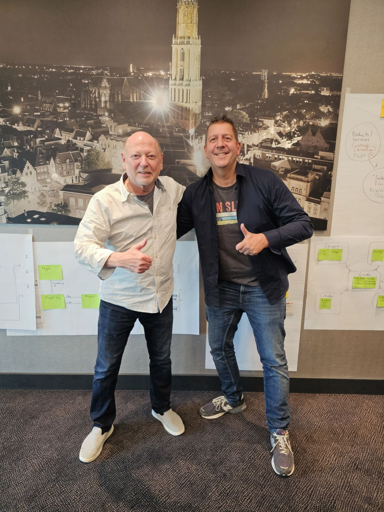

Foundations of data warehousing
Alec Sharp
I followed his three-day Business-Oriented Data Modeling masterclass — a major influence on my conviction that good models start with the business, not the database. The clearest articulation of the business focus I bring to every model.
LinkedIn →Marco Wobben
Behind CaseTalk and a leading voice in FCO-IM — fact-based modeling that grounds conceptual models in real, verifiable facts. Someone I know personally; his work informs how I keep models honest and business-readable.
casetalk.com →Bill Inmon
The case for 3NF and the business language model still shapes my integration-layer thinking.
Find his work →Ralph Kimball
Timeless dimensional patterns that still shape modern, time-aware data platforms.
Kimball Group →Francesco Puppini
Inventor of the Unified Star Schema — an elegant, resilient approach to the delivery layer that solves many-to-many and drill-across cleanly. A concept I love and have written about.
LinkedIn →Steve Hoberman
Data Modeling Zone and a body of work that keeps the craft of modeling alive.
stevehoberman.com →Len Silverston
The Data Model Resource Book series — universal, reusable patterns that underpin my business-oriented, reuse-first modeling.
LinkedIn →Lawrence Corr
From whiteboards to working models — his thinking influenced how I run modeling sessions.
LinkedIn →George McGeachie
The deepest PowerDesigner and metadata-management voice I know — his Metadata Matters work sharpened my own PowerDesigner automation and metadata thinking.
metadatamatters.com →Larry Shiller
Author of Metadata First: The Future of Data — a calm, principle-driven voice arriving at the same place I have: structure and metadata come first, the tool comes second. He generously quoted my work in the book; kindred spirits on what makes data trustworthy.
LinkedIn →